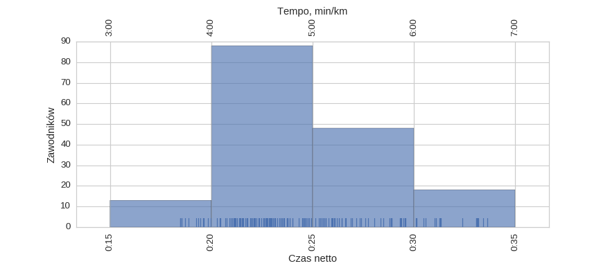
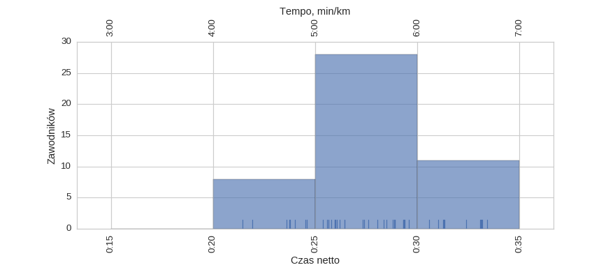
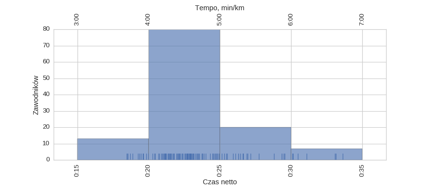
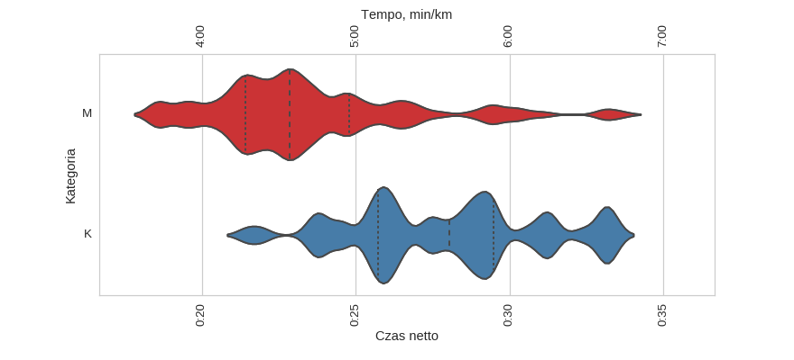
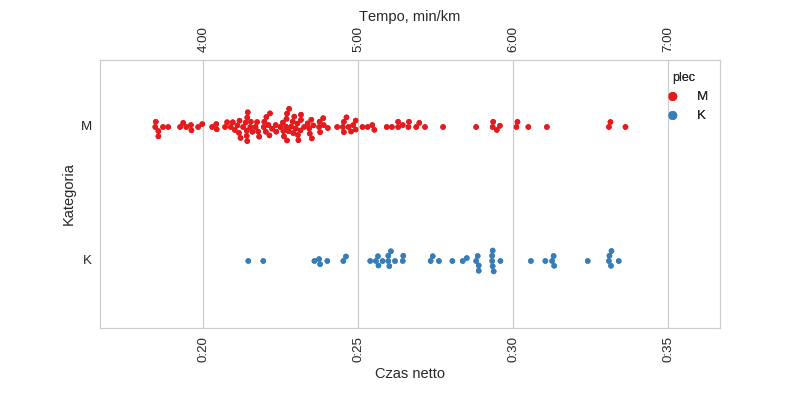
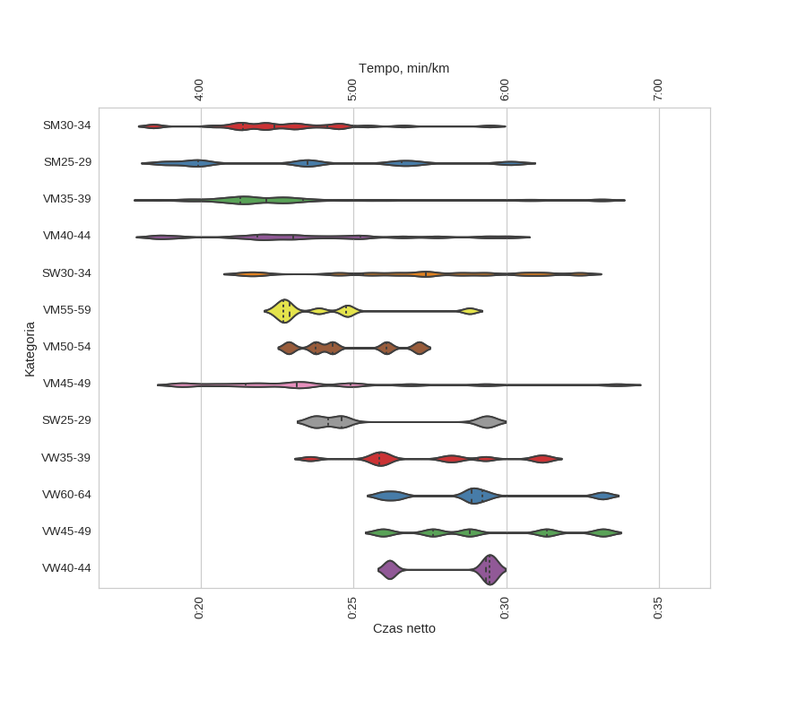
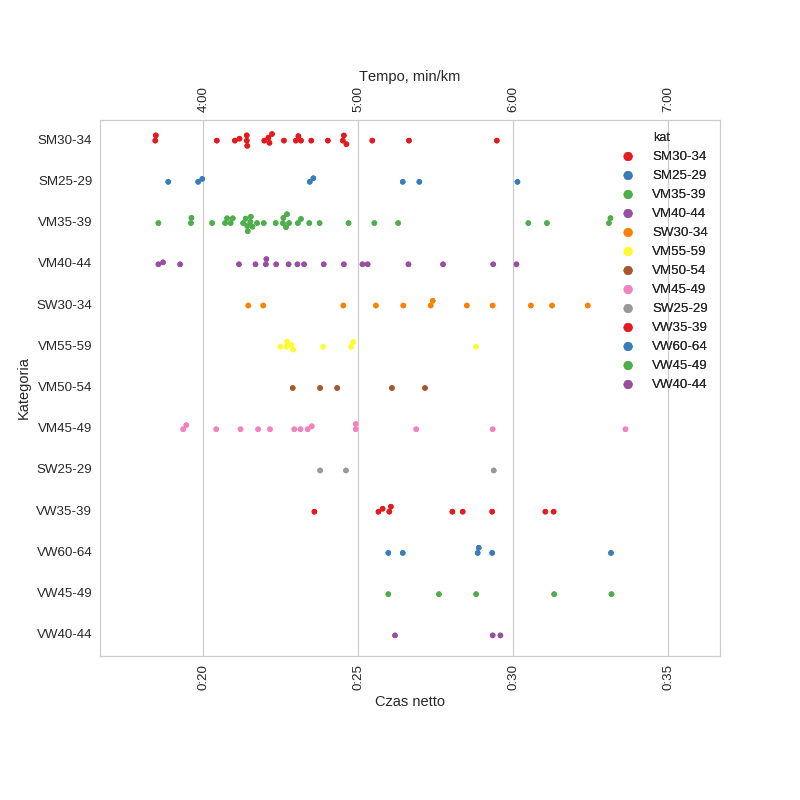

Statystyki biegowe
Statystyki biegoweParkRun Ursynów (2016 połączone statystyki)
Histogramy
Klasyfikacja generalna

| mean | std | min | 25% | 50% | 75% | max | |
|---|---|---|---|---|---|---|---|
| czas | 0:24:43 | 0:03:44 | 0:18:27 | 0:21:57 | 0:23:46 | 0:26:55 | 0:33:37 |
kobiety

| mean | std | min | 25% | 50% | 75% | max | |
|---|---|---|---|---|---|---|---|
| czas | 0:27:54 | 0:03:06 | 0:21:27 | 0:25:43 | 0:28:02 | 0:29:28 | 0:33:24 |
mężczyźni

| mean | std | min | 25% | 50% | 75% | max | |
|---|---|---|---|---|---|---|---|
| czas | 0:23:28 | 0:03:11 | 0:18:27 | 0:21:25 | 0:22:51 | 0:24:47 | 0:33:37 |
Wykresy rybkowe
wg płci


| czas_netto_s | count | |||||||
|---|---|---|---|---|---|---|---|---|
| mean | std | min | 25% | 50% | 75% | max | ||
| plec | ||||||||
| K | 0:27:54 | 0:03:06 | 0:21:27 | 0:25:43 | 0:28:02 | 0:29:28 | 0:33:24 | 47 |
| M | 0:23:28 | 0:03:11 | 0:18:27 | 0:21:25 | 0:22:51 | 0:24:47 | 0:33:37 | 120 |
wg kategorii


| czas_netto_s | count | |||||||
|---|---|---|---|---|---|---|---|---|
| mean | std | min | 25% | 50% | 75% | max | ||
| kat | ||||||||
| SM25-29 | 0:23:38 | 0:03:59 | 0:18:52 | 0:19:56 | 0:23:29 | 0:26:34 | 0:30:08 | 8 |
| SM30-34 | 0:22:46 | 0:02:25 | 0:18:27 | 0:21:24 | 0:22:24 | 0:24:08 | 0:29:28 | 24 |
| SW25-29 | 0:25:54 | 0:03:01 | 0:23:46 | 0:24:11 | 0:24:36 | 0:26:59 | 0:29:22 | 3 |
| SW30-34 | 0:27:13 | 0:03:28 | 0:21:27 | 0:25:18 | 0:27:22 | 0:29:38 | 0:32:24 | 12 |
| VM35-39 | 0:23:11 | 0:03:37 | 0:18:33 | 0:21:18 | 0:22:08 | 0:23:21 | 0:33:08 | 34 |
| VM40-44 | 0:23:32 | 0:03:16 | 0:18:33 | 0:21:51 | 0:23:02 | 0:25:13 | 0:30:06 | 19 |
| VM45-49 | 0:23:47 | 0:03:49 | 0:19:21 | 0:21:29 | 0:23:08 | 0:24:55 | 0:33:37 | 15 |
| VM50-54 | 0:24:50 | 0:01:44 | 0:22:53 | 0:23:46 | 0:24:19 | 0:26:05 | 0:27:09 | 5 |
| VM55-59 | 0:23:59 | 0:02:01 | 0:22:29 | 0:22:42 | 0:22:54 | 0:24:46 | 0:28:48 | 9 |
| VW35-39 | 0:27:30 | 0:02:31 | 0:23:35 | 0:25:50 | 0:27:02 | 0:29:04 | 0:31:18 | 10 |
| VW40-44 | 0:28:22 | 0:01:53 | 0:26:11 | 0:27:45 | 0:29:20 | 0:29:27 | 0:29:35 | 3 |
| VW45-49 | 0:29:22 | 0:02:52 | 0:25:58 | 0:27:36 | 0:28:48 | 0:31:19 | 0:33:10 | 5 |
| VW60-64 | 0:28:46 | 0:02:33 | 0:25:58 | 0:27:02 | 0:28:52 | 0:29:12 | 0:33:09 | 6 |
Menu
HistogramyWykresy rybkowe
∙ wg płci
∙ wg kategorii
Dystans: 5.0 km
Liczba uczestników: 167
Wygenerowano: 2016-10-17 21:51:23.699783